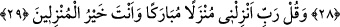

NUH ALEYHİSSELÂM’IN
MÜCÂDELESİ
23. Andolsun ki, Nuh’u kavmine gönderdik ve o: Ey kavmim! Allah’a kulluk edin.
Sizin için O’ndan başka bir ilah yoktur. Hâla sakınmaz mısınız? dedi.
24. Bunun üzerine, kavminin inkarcı ileri gelenleri şöyle dediler: “Bu, sadece
sizin gibi bir beşerdir. Size üstün ve hâkim olmak istiyor. Eğer Allah (peygamber
göndermek) isteseydi, muhakkak ki melekler gönderirdi. Biz geçmişteki
atalarımızdan böyle bir şey duymadık.”
25. “Bu, yalnızca kendisinde delilik bulunan bir kimsedir. Öyle ise, bir süreye
kadar ona katlanıp bekleyin bakalım.”
26. (Nuh), Rabbim! dedi, beni yalanlamalarına karşı bana yardım et!
27. Bunun üzerine ona şöyle vahyettik: Gözlerimizin önünde (muhafazamız
altında) ve bildirdiğimiz şekilde gemiyi yap. Bizim emrimiz gelip de sular coşup
yükselmeye başlayınca her cinsten birer çift ile, daha önce kendisi aleyhinde
hüküm verilmiş olanların dışındaki aileni gemiye al. Zulmetmiş olanlar konusunda
bana hiç yalvarma! Zira onlar kesinlikle boğulacaklardır.
28. Sen, yanındakilerle birlikte gemiye yerleştiğinde: “Bizi zalimler
topluluğundan kurtaran Allah’a hamdolsun” de.
29. Ve de ki: Rabbim! Beni bereketli bir yere indir. Sen, iskân edenlerin en
hayırlısısın.